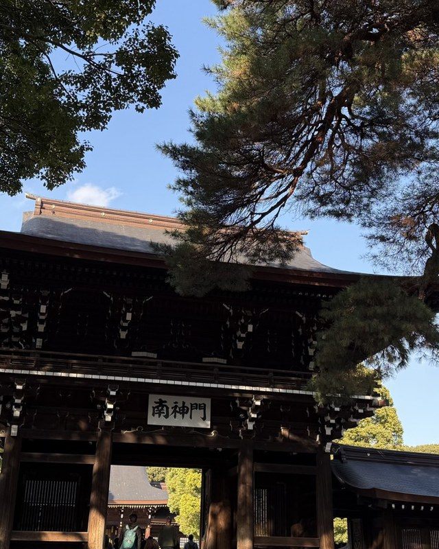
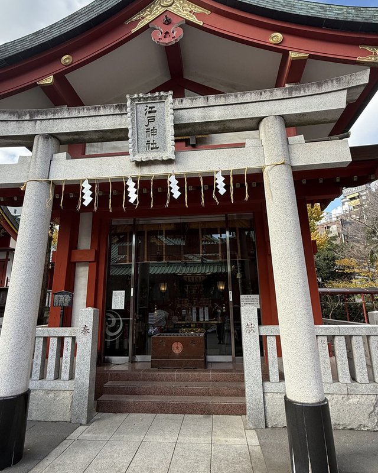
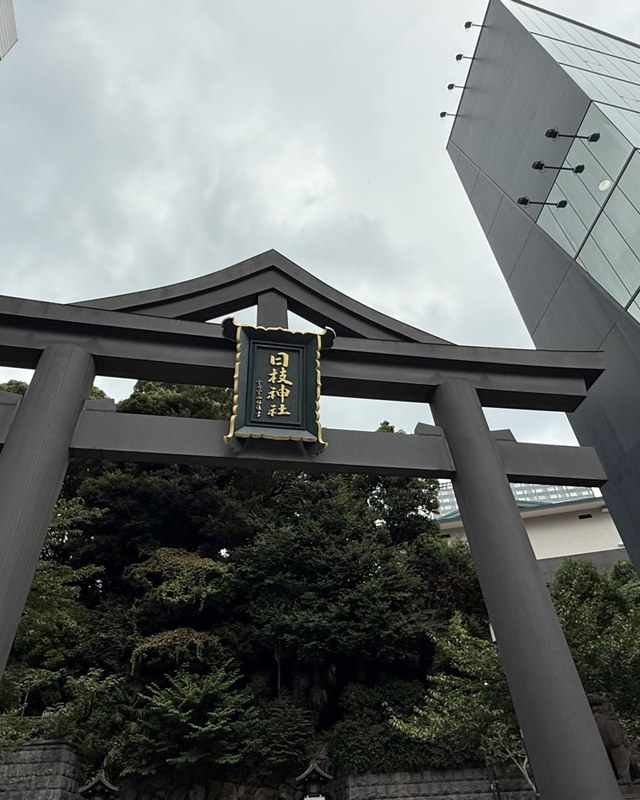
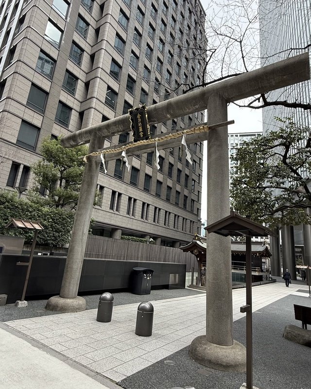
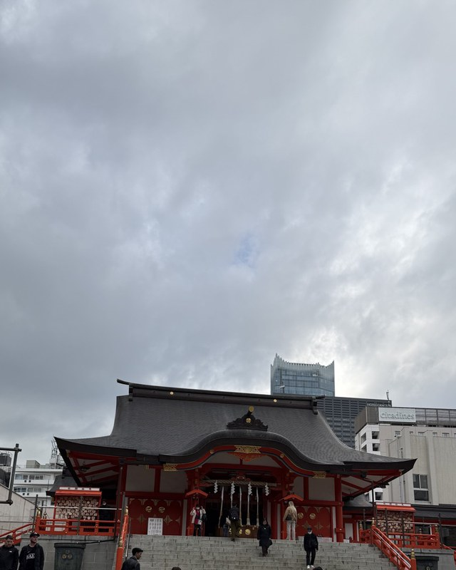
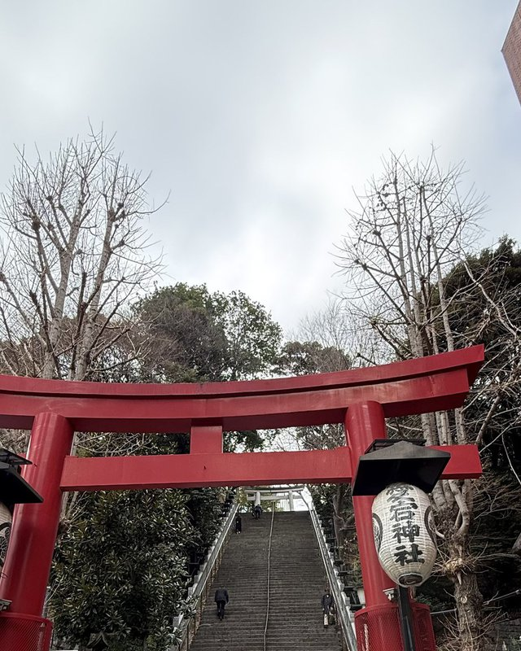
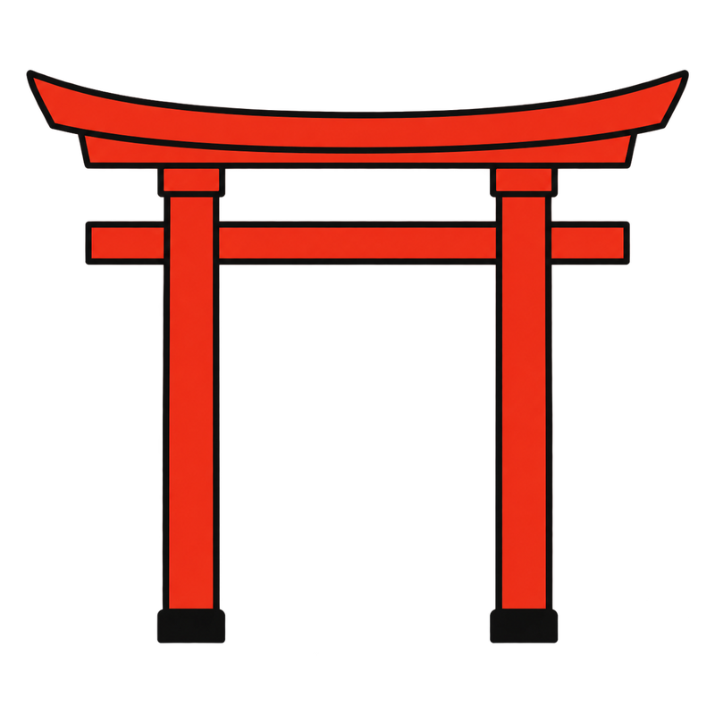

歩いて回れる都心の社から、電車で一時間の郊外、そして半日かけて行く山や海の社まで。東京は一点ではなく、同心円で広がっている。滞在日数に合わせて、外側へ進めばいい。

神明治神宮Meiji Jingu東京・渋谷区神宮・明治天皇を祀る
名神田神社（神田明神）Kanda Myojin東京・千代田区江戸の総鎮守
名日枝神社Hie Jinja東京・千代田区江戸城の産土神
名虎ノ門金刀比羅宮Toranomon Kotohira-gu東京・港区金刀比羅宮の系列
名花園神社Hanazono Jinja東京・新宿区新宿の総鎮守
名愛宕神社Atago Jinja東京・港区愛宕山の山頂
名代々木八幡宮Yoyogi Hachimangu東京・渋谷区八幡の系列都心の駅から徒歩圏。同じ日に2〜3社をはしごできる。
西は府中、東は市川、南は横浜、北は大宮。都心を四方から囲む圏。
鎌倉・相模の宮・秩父・奥多摩・丹沢・箱根・茨城・千葉・静岡の三島。長く滞在する人ほど、この先まで行ける。